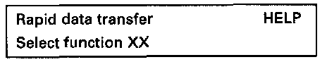
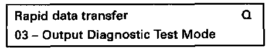

Output Diagnostic Test Mode (DTM) (Function 03)
The output Diagnostic Test Mode (DTM) actuates the following components in the stated sequence:1. Cylinder 1 fuel injector -N30-
2. Cylinder 2 fuel injector -N31-
3. Cylinder 3 fuel injector -N32-
4. Cylinder 4 fuel injector -N33-
5. Cylinder 5 fuel injector -N83-
6. Cylinder 6 fuel injector -N84-
7. Evaporative Emission (EVAP) canister purge regulator valve -N80-
8. Secondary Air Injection (AIR) solenoid valve -N112-
9. Secondary Air Injection (AIR) pump relay -J299-
10. Evaporative Emission (EVAP) canister purge solenoid valve -N115-
Special tools, testers and auxiliary items:
- VAG 1551/1552 scan tool with VAG 1551/3 adapter cable.
- VAG 1598/18 test box.
- Connector test kit VW 1594.
- VAG 1527B voltage tester.
Test conditions:
- Fuse 18 OK.
- Throttle position (TP) -G69- OK.
- Closed throttle position switch OK, checking See checking throttle valve control module. Testing and Inspection
Test sequence:
- Connect the VAG 1551/1552 scan tool and with ignition switched on select "Engine Electronics" address word 01. Connecting and Selecting "Engine Electronics" address word 01

Indicated on display
- Operate VAG 1551/1552 scan tool taking into account the information on the display:
- Press buttons -0- and -3- to select "Output Diagnostic Test Mode" function 03.

Indicated on display
To activate cylinder 1 fuel injector -N30-:
- Press -Q- button to confirm input.

Indicated on display
- Open throttle valve fully and close again.
- The cylinder 1 fuel injector must click.
NOTE:
All fuel injectors click extremely quietly!
To activate fuel injectors for cylinders 2-6, in each case:
- Open throttle valve fully again and close.
To skip individual tests:
- Press -> button.
If one or more fuel injectors do not click:
- Continue Output DTM to the end.
- Switch ignition off.
- Check fuel injector actuation (resistance and current supply). Testing and Inspection
To activate Evaporative Emission (EVAP) canister purge regulator valve -N8O-:
- Press -> button.

Indicated on display
- The EVAP canister purge regulator valve must click until the next component is activated by pressing the -> button.
- Pull hose off purge regulator valve (from EVAP canister).
- Connect auxiliary hose.
- During Output DTM blow into auxiliary hose (in direction of throttle housing).
- Valve must open and close.
If the purge regulator valve does not open and close:
- Disconnect 2-pin connector at valve and connect VAG 1527B voltage tester with test leads from VW 1594 to disconnected connector.
- The LED must flash.
If LED flashes:
- Replace EVAP canister purge regulator valve.
If LED does not flash:
- Switch ignition off.

- Connect VAG 1598/18 test box to ECM wiring harness (arrow).
- Check wiring between test box and 2-pin connector for open circuit according to wiring diagram.
Terminal 1 and test box socket 31:
Resistance: Max. 1.5 ohms
- Check wiring between 2-pin connector terminal 2 and central electrical system for open circuit according to wiring diagram. Resistance: Max. 1.5 ohms
- Check wiring between ECM connector and 2-pin connector terminal 1 for short circuit to wire terminal 2 and to vehicle Ground (GND), according to wiring diagram.
Terminal 2 and test box socket 31:
Specification: infinite ohms.
- Additionally, check wiring for short circuit to battery positive (B+).
Specification: infinite ohms.
If no malfunction in wiring is detected:
- Reconnect harness connector to EVAP canister purge regulator valve.
- Replace Engine Control Module (ECM) -J220-.
To activate Secondary Air Injection (AIR) solenoid valve -N112-:
- Press -> button.

Indicated on display
- The Secondary air injection solenoid valve must run until the next component is activated by pressing the -> button.
If the relay does not click:
- Disconnect 2-pin connector at Secondary Air Injection (AIR) solenoid valve -N112-.
- Connect VAG 1527B voltage tester using test leads from VW 1594 to disconnected connector.
LED must light up.
If LED lights up (voltage supply OK):
- Replace Secondary Air Injection (AIR) solenoid valve -N112-.
If LED does not light up:
- Check wiring to Secondary Air Injection (AIR) solenoid valve -N112- according to wiring diagram.
- Check Secondary Air Injection (AIR) pump relay -J299-: See Electrical Wiring Diagrams.
To activate Secondary Air Injection (AIR) pump relay -J299-:
- Press -> button.

Indicated on display
- The Secondary Air Injection (AIR) pump relay -J299- activates the secondary air pump motor, and this must run at intervals until the next component is activated by pressing the -> button.
If the secondary air pump motor does not run:
- Disconnect 2-pin connector at Secondary Air Injection (AIR) pump motor -V101-.
- Connect VAG 1527B voltage tester using test leads from VW 1594 to disconnected connector.
LED must light up.
If LED lights up (voltage supply OK):
- Replace Secondary Air Injection (AIR) pump motor -V101-.
If LED does not light up:
- Check Secondary Air Injection (AIR) pump relay -J299-: See Electrical Wiring Diagrams.
- Check wiring to Secondary Air Injection (AIR) pump motor -V101- according to wiring diagram.
- Press -> button.

Indicated on display
Disregard display.
- Press -> button.

Indicated on display
- Press buttons -0- and -6- to select "End Output" function 06 and press -Q- button to confirm input.